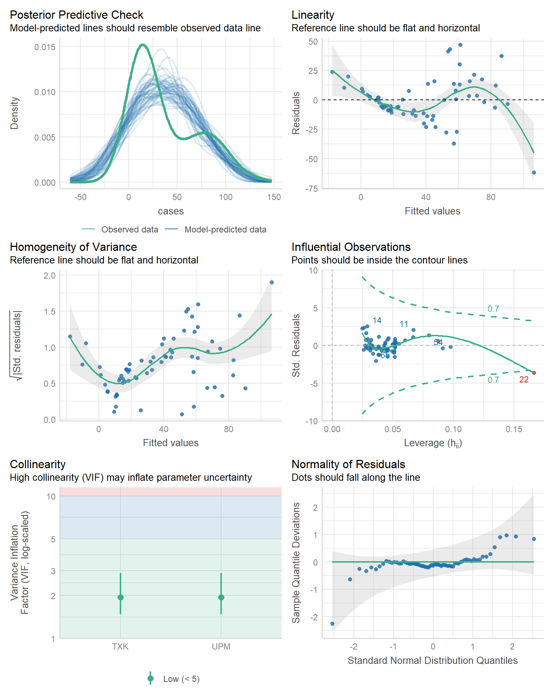
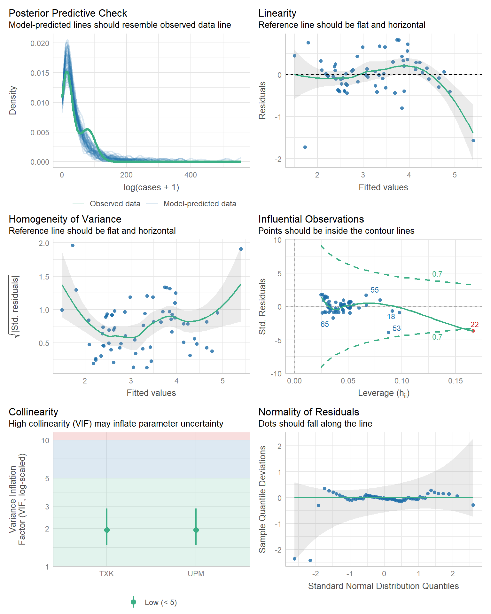
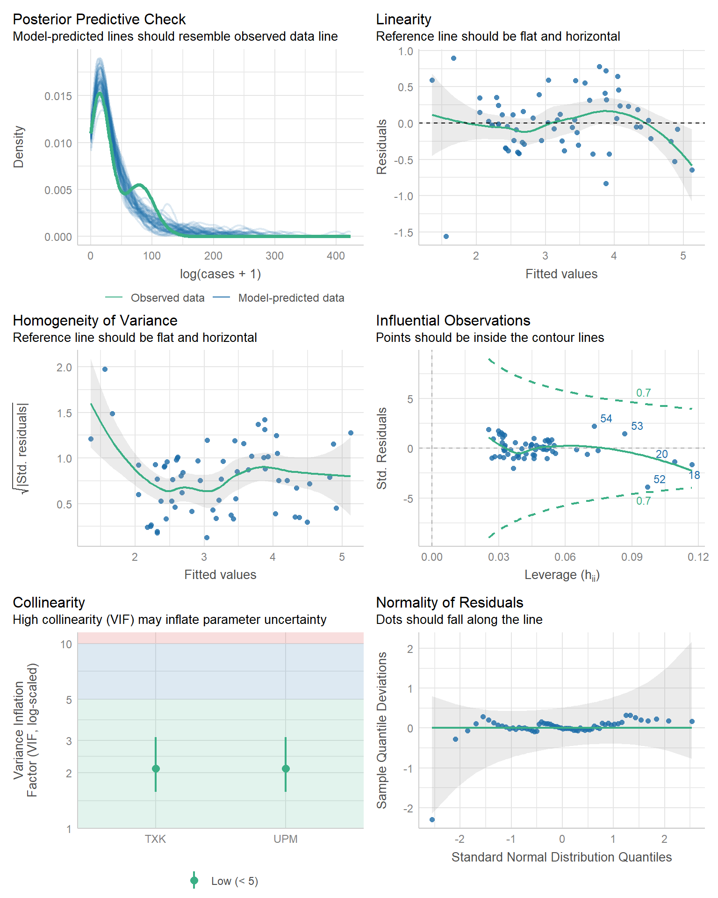
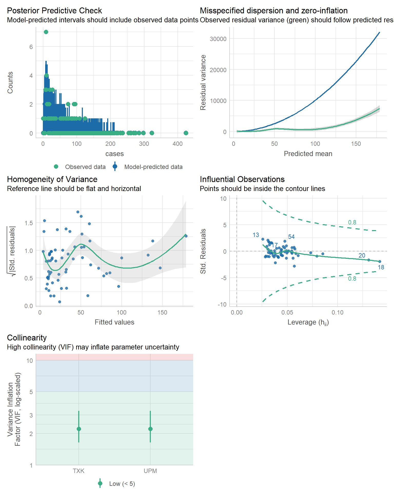

Módulo 7: Otros métodos estadísticos
Mauricio Moreno, PhD
Antes de comenzar
Mapas de calor con {ggplot2}!
Hace poco descubrí un nuevo paquete que nos ayuda a realizar mapas de calor con
{ggplot2}Su nombre es
{tidyheatmaps}y puedes ver acerca del mismo aquí
Heterocedasticidad en el ANOVA
Usaremos los datos de las ranas arbóreas de ojos rojos de Touchon (disponibles en formato csv en la pestaña de recursos del sition web del curso).
Estos corresponden a una investigación que llevo por objetivo el estudiar las interacciones entre predadores y recursos en el desarrollo de estas ranas desde su eclosión hasta el término de la metamorfosis.
Nos enfocaremos en las variables:
Respuesta: Edad de metamorfosis (
Age.DPO)Independientes:
Predadores (
Pred), 3 niveles: L = letales, NL = no letales y C = controlRecursos (
Res), 2 niveles: Lo = bajos y Hi = altos
El diseño experimental cae en la categoría de un DFC en bloques.
La pregunta de investigación en esta caso particular, es el determinar si la edad del término de la metaformosis se ve afectada por la presencia/ausencia de depredadores y abundancia/carencia de recursos.
Heterocedasticidad en el ANOVA
- Para ahorrarnos tiempo, supongamos que ya corrimos un primer ANOVA no aditivo de dos vías, y encontramos desviaciones de la normalidad que corregimos con la transformación del logaritmo de
Age.DPO.
library(car)
ranas <- read.csv("datos/touchon.csv")
lm <- lm(log(Age.DPO) ~ Pred * Res, data = ranas)
residuos <- lm$residuals
shapiro.test(residuos)
Shapiro-Wilk normality test
data: residuos
W = 0.98939, p-value = 0.7702Levene's Test for Homogeneity of Variance (center = median)
Df F value Pr(>F)
group 5 4.6455 0.0009903 ***
72
---
Signif. codes: 0 '***' 0.001 '**' 0.01 '*' 0.05 '.' 0.1 ' ' 1- Como podemos ver, la normalidad de los residuos ya no es un problema, pero la homogeinidad de varianzas si lo es.
Corrección de Welch en ANOVA
En ANOVA, de manera similar a las pruebas t, es posible usar la corrección de Welch para cuando el supuesto de la heterodasticidad no se cumple.
La desventaja radica en que este test solo es aplicable en la estructura del ANOVA de una vía
Esto no es un problema si sabemos re-parametrizar el ANOVA de dos vías original.
- Colapsamos los factores un único factor
- La corrección de Welch para ANOVA está disponible en el paquete
{rstatix}
Corrección de Welch en ANOVA
- Otra desventaja es el no contar más con las agrupaciones por letras de las comparaciones múltiples
# A tibble: 15 × 8
.y. group1 group2 estimate conf.low conf.high p.adj p.adj.signif
* <chr> <chr> <chr> <dbl> <dbl> <dbl> <dbl> <chr>
1 log.Age.DPO C-Hi C-Lo 0.440 0.180 0.700 0.000261 ***
2 log.Age.DPO C-Hi L-Hi -0.202 -0.362 -0.0425 0.008 **
3 log.Age.DPO C-Hi L-Lo -0.0452 -0.258 0.168 0.986 ns
4 log.Age.DPO C-Hi NL-Hi -0.0531 -0.351 0.244 0.988 ns
5 log.Age.DPO C-Hi NL-Lo 0.285 -0.331 0.902 0.545 ns
6 log.Age.DPO C-Lo L-Hi -0.643 -0.877 -0.408 0.00000114 ****
7 log.Age.DPO C-Lo L-Lo -0.485 -0.754 -0.217 0.0000932 ****
8 log.Age.DPO C-Lo NL-Hi -0.493 -0.821 -0.166 0.002 **
9 log.Age.DPO C-Lo NL-Lo -0.155 -0.772 0.462 0.936 ns
10 log.Age.DPO L-Hi L-Lo 0.157 -0.0196 0.334 0.099 ns
11 log.Age.DPO L-Hi NL-Hi 0.149 -0.142 0.440 0.448 ns
12 log.Age.DPO L-Hi NL-Lo 0.488 -0.133 1.11 0.129 ns
13 log.Age.DPO L-Lo NL-Hi -0.00797 -0.310 0.294 1 ns
14 log.Age.DPO L-Lo NL-Lo 0.331 -0.286 0.947 0.419 ns
15 log.Age.DPO NL-Hi NL-Lo 0.339 -0.284 0.961 0.433 ns Corrección de Welch en ANOVA
- Pero podemos llevar a cabo gráficos de comparaciones por pares con la ayuda de
{ggpubr}
Regresión lineal
Generalidades
Se diferencia del ANOVA al considerar uno o más predictores continuos (no factores categóricos).
Los supuestos de la regresión lineal son:
Existencia de una relación lineal entre las variables continuas objeto de la regresión
Normalidad de los residuos
Que no exista multicolinearidad (en el caso de regresión múltiple)
Que no exista auto correlación (que las observaciones no dependan una de otra dentro de una misma variable)
Homogeneidad de la varianza de los residuos
Contrario al ANOVA, no existen correcciones o métodos alternativos cuando las transformaciones fallan.
Por esto, lo que se recomienda hacer es mencionar todos los detalles de la conducción del modelo.
En regresión lineal es quizá en el método que más se abusa del remover outliers.
Regresión lineal simple en R
Usando los datos de Touchon, podríamos preguntarnos si el tamaño de las ranas al final de la metamorfosis
SVL.finalestá influenciado por la edad en finalizar la metamorfosisAge.DPO.Esta regresión lineal sería de la siguiente forma:
Call:
lm(formula = SVL.final ~ Age.DPO, data = ranas)
Residuals:
Min 1Q Median 3Q Max
-3.1414 -0.9521 -0.1297 0.6842 3.4349
Coefficients:
Estimate Std. Error t value Pr(>|t|)
(Intercept) 21.285436 0.416763 51.073 < 2e-16 ***
Age.DPO -0.029437 0.006052 -4.864 6.08e-06 ***
---
Signif. codes: 0 '***' 0.001 '**' 0.01 '*' 0.05 '.' 0.1 ' ' 1
Residual standard error: 1.262 on 76 degrees of freedom
Multiple R-squared: 0.2374, Adjusted R-squared: 0.2273
F-statistic: 23.65 on 1 and 76 DF, p-value: 6.081e-06- Pero antes de cualquier inferencia, vamos a darle un vistazo a los diagnósticos de la regresión lineal
Diagnósticos de la regresión lineal
Diagnósticos de la regresión lineal
Diagnósticos de la regresión lineal

Residuos vs. Valores ajustados
En el ANOVA vimos como este plot sugería departuras de la homocedasticidad. En el caso de la regresión lineal, los residuos al no estar agrupados en categorías presentan mayor información sobre este supuesto. Adicionalmente, curvaturas en la línea roja evidencian también departuras de la linearidad. Esto quiere decir que la relación entre las variables no es completamente lineal. A veces esto puede corregirse con transformaciones.
Diagnósticos de la regresión lineal
- Es ideal. (b) Es indicativo de no linearidad. (c) Evidencia de heterocedasticidad. (d) Evidencia de una tendencia temporal
Diagnósticos de la regresión lineal
Residuos vs. Apalancamiento
Aquellos puntos que estén etiquetados con números son mostrados como posibles outliers bajo dos criterios:
Están por fuera de los límites de la regla del rango intercuartílico (IQR), y
Marcados como outliers con influencia de apalancamiento mediante la prueba de Cook (distancia de Cook).
El segundo criterio es un argumento sólido para remover outliers.
Pruebas formales de los supuestos
Como vimos, los supuestos de la regresión lineal son más que para el ANOVA.
Existen varias pruebas formales para chequear cada uno de sus supuestos, sin embargo rara vez son empleadas.
La razón yace en que si los aplicáramos todo el tiempo, no haríamos regresiones lineales ni el 10% de las veces.
Si tienes curiosidad en estas pruebas puedes visitar este enlace.
De alguna manera podemos decir que de hecho, los estadísticos somos más laxos con la regresión lineal siempre y cuando estas departuras de los supuestos fueran debidamente documentadas y plasmadas en los trabajos científicos, lo cual lamentablemente no pasa muy a menudo.
Existen por supuesto métodos que no dependen de todos estos supuestos (por ejemplo: regresiones lineales Bayesianas, modelos lineales generalizados correctamente parametrizados) pero no son parte de este curso.
Transformación de datos
Interpretación de la regresión lineal
\[ y = mx + b \]
Call:
lm(formula = log(SVL.final) ~ log(Age.DPO), data = ranas)
Residuals:
Min 1Q Median 3Q Max
-0.182298 -0.049070 0.000516 0.038342 0.159057
Coefficients:
Estimate Std. Error t value Pr(>|t|)
(Intercept) 3.44001 0.09211 37.345 < 2e-16 ***
log(Age.DPO) -0.11624 0.02232 -5.208 1.58e-06 ***
---
Signif. codes: 0 '***' 0.001 '**' 0.01 '*' 0.05 '.' 0.1 ' ' 1
Residual standard error: 0.06244 on 76 degrees of freedom
Multiple R-squared: 0.263, Adjusted R-squared: 0.2533
F-statistic: 27.12 on 1 and 76 DF, p-value: 1.581e-06- Por cada incremento en una unidad del logaritmo de
Age.DPO, tenemos 0.12 unidades en descenso del logaritmo deSVL.final
Interpretación de la regresión lineal
Sin embargo una interpretación en la escala logarítmica no es completamente entendible, al menos para alguien ajeno al análisis que realizamos.
Podríamos hacer la retransformación de las variables a sus unidades originales y generar un gráfico de las predicciones. A la final se reduce a matemática básica.
Afortunadamente la librería
{ggeffects}nos puede ayudar
$Age.DPO
# Predicted values of SVL.final
Age.DPO | Predicted | 95% CI
----------------------------------
35 | 20.63 | 20.05, 21.23
50 | 19.79 | 19.46, 20.13
60 | 19.38 | 19.11, 19.65
75 | 18.88 | 18.57, 19.20
90 | 18.48 | 18.08, 18.90
105 | 18.16 | 17.66, 18.67
120 | 17.88 | 17.30, 18.48
145 | 17.49 | 16.79, 18.22
attr(,"class")
[1] "ggalleffects" "list"
attr(,"model.name")
[1] "reg1"Regresión lineal múltiple en R
Es usada para predecir una sola variable continua (y) en función de múltiples predictores continuos (un set de variables X).
Tiene prácticamente los mismos supuestos que la regresión lineal simple:
Linearidad de los predictores
Homogeneidad de la varianza (homocedasticidad)
Independencia de los errores (residuos)
Normalidad de los residuos
Independencia de los predictores
Un ejemplo de una regresión múltiple podría expresarse mediante la siguiente ecuación
Pasos para una regresión múltiple
El llegar a un modelo apropiado se convierte en lo que algunos estadísticos llaman el “arte de modelar”:
Empezar por lo que se le conoce como un modelo completo (incluyendo todas las variables continuas disponibles).
Realizar una selección automática de variables sobre el modelo del paso 1.
Checar manualmente por colinearidad entre las variables del modelo resultante del paso 2.
Revisar si las variables incluidas tienen sentido (biológico),
Checar los supuestos de normalidad y homocedasticidad.
Realizar transformaciones de ser necesario.
Interpretar resultados.
Estos pasos son solo mi recomendación. Dependiendo del problema, quizá ni siquiera sirvan y sus análisis estarán de la mano de más de su buen entendimiento de los datos y los fenómenos que deseen explicar.
Datos que usaremos
Usaremos los datos de rotavirus en Berlin del archivo de Excel “rotXLS.xlsx” que contiene información sobre el conteo de casos de rotavirus en Berlín desde el año 2001 hasta el 2020.
Supongámos que queremos modelar la variable
casesen función de todas las variables metereológicas a nuestra disposición. Para esto, aquí la descripción de esta tabla de datos
date: fecha de cierre de la toma de datoscases: número de casos de rotavirus en la semanaweek: semana epidemiológicaincidence: número de casos/100000 habitantesFM: media diaria de velocidad del viento (m/s)RSK: media diaria de lluvia (mm)
SHK_TAG: media diaria de nieve (cm)PM: media diaria de presión atmosférica (hPa)TMK: media diaria de temperatura (°C)TXK: media diaria de temperatura máxima (°C)TNK: media diaria de temperatura mínima (°C)UPM: media diaria de humedad relativa (%)
- Sin embargo, antes de continuar, debemos hacer un preprocesamiento de datos ya que en la estructura original de estos se considera un efecto temporal dado por los años. Para simplificarlo, agruparemos los datos por meses y semanas epidemiológicas.
Preprocesamiento de datos
- Asegúrate de tener instaladas las librerías
{dplyr}y{lubridate}antes de correr este código
library(dplyr)
library(readxl)
library(lubridate)
rot_berlin <- read_excel("datos/rotXLS.xlsx")
rot_berlin$month <- month(rot_berlin$date)
rot_berlin <- rot_berlin %>%
group_by(month, week) %>%
summarise(incidence = mean(incidence),
cases = round(mean(cases),0),
FM = mean(FM),
RSK = mean(RSK),
SHK_TAG = mean(SHK_TAG),
PM = mean(PM),
TMK = mean(TMK),
TXK = mean(TXK),
TNK = mean(TNK),
UPM = mean(UPM))
rot_berlin$month <- as.factor(rot_berlin$month)
rot_berlin$week <- as.factor(rot_berlin$week)Modelo completo
- Empezaremos formulando un modelo completo para estos datos de la siguiente manera:
En la función
lmse pueden incluir términos de órdenes superiores (interacciones, cuadrados, cubos, etc) con variables continuas.Por simplicidad, únicamente consideraremos predictores de primer orden.
Es importante tener en cuenta que así incluyésemos términos de órdenes superiores en
lm, todavía sería considerado un modelo lineal ya que los coeficientes de estos términos seguirán siendo estimados de manera lineal (la variable de respuesta es una combinación lineal de los predictores que puede o no incluir transformaciones lineales de estos últimos).Un ejemplo de una relación no lineal de los predictores se da cuando los coeficientes de la ecuación forman parte de expresiones no lineales:
\[ y = \beta_{1}e^{\beta_2X} \]
Selección de variables
La selección automática de variables funciona con un algoritmo relativamente sencillo:
Retira una variable a la vez del modelo, calcula un criterio de comparación y repite el proceso
Usa ese criterio de comparación con respecto a un modelo nulo (sin ningún predictor) y devuelve el modelo que haya obtenido la mejor valoración.
El criterio de evaluación más usado para comparar modelos es el denominado criterio de información de Akaike (AIC), y es un estimador del error de predicción. Mientras menos sea el valor de AIC, mejores las predicciones que un modelo teoricamente será capaz de realizar.
Realizamos la selección de variables antes de cualquier diagnóstico o transformación ya que a veces estas últimas “exageran” la importancia de las variables en el caso de hacer la selección después.
La manera más sencilla de hacer una selección de variables es usando la función base de R
step
Selección de variables
Start: AIC=372.26
cases ~ FM + RSK + SHK_TAG + PM + TMK + TXK + TNK + UPM
Df Sum of Sq RSS AIC
- TNK 1 2.8 15135 370.27
- RSK 1 18.7 15151 370.34
- SHK_TAG 1 42.4 15175 370.44
<none> 15132 372.26
- FM 1 658.0 15790 373.03
- TMK 1 830.7 15963 373.74
- PM 1 887.1 16019 373.97
- TXK 1 1259.3 16392 375.46
- UPM 1 3660.8 18793 384.35
Step: AIC=370.27
cases ~ FM + RSK + SHK_TAG + PM + TMK + TXK + UPM
Df Sum of Sq RSS AIC
- RSK 1 17.7 15153 368.35
- SHK_TAG 1 60.8 15196 368.53
<none> 15135 370.27
- FM 1 697.7 15833 371.20
- PM 1 889.7 16025 371.99
- TXK 1 1888.5 17024 375.92
- TMK 1 4107.8 19243 383.88
- UPM 1 5612.2 20747 388.78
Step: AIC=368.35
cases ~ FM + SHK_TAG + PM + TMK + TXK + UPM
Df Sum of Sq RSS AIC
- SHK_TAG 1 57.9 15211 366.60
<none> 15153 368.35
- FM 1 683.9 15837 369.22
- PM 1 926.0 16079 370.21
- TXK 1 2063.6 17216 374.65
- TMK 1 4347.8 19501 382.75
- UPM 1 5962.0 21115 387.92
Step: AIC=366.6
cases ~ FM + PM + TMK + TXK + UPM
Df Sum of Sq RSS AIC
<none> 15211 366.60
- FM 1 698.0 15909 367.51
- PM 1 1160.5 16371 369.38
- TXK 1 2076.5 17287 372.92
- TMK 1 4423.5 19634 381.19
- UPM 1 5958.9 21169 386.09
Call:
lm(formula = cases ~ FM + PM + TMK + TXK + UPM, data = rot_berlin)
Coefficients:
(Intercept) FM PM TMK TXK UPM
2503.898 -7.526 -2.219 -19.360 12.304 -2.425 Multicolinearidad
- De acuerdo a la selección automática, nuestro modelo sería hasta el momento:
Ningún método de selección de variables automático es perfecto.
En este caso, aunque obvio, sabemos que las variables
TMKyTXKdeben estar correlacionadas al ser medidas de temperatura correspondientes al mismo día.Bien podríamos deshechar una de las dos, pero cuando no sabemos la naturaleza de las variables, es mejor llevar a cabo un análisis de correlación antes de checar el modelo por sus supuestos.
Cuando exploramos datos (módulo 4) ya hicimos una primera aproximación con las matrices de dispersión (paquete
{GGally}. Sin embargo, en ellas solo vimos el coeficiente de correlación junto al código de significancia.Para estar seguros de que eliminaremos variables correctamente, es mejor dar un vistazo a las matrices de correlación directamente.
Matrices de correlación
- Para calcular la matriz de correlación de un conjunto de datos usaremos la librería
{Hmisc}
FM PM TMK TXK UPM
FM 1.00 -0.38 -0.67 -0.66 0.22
PM -0.38 1.00 0.14 0.14 -0.02
TMK -0.67 0.14 1.00 1.00 -0.65
TXK -0.66 0.14 1.00 1.00 -0.70
UPM 0.22 -0.02 -0.65 -0.70 1.00
n= 65
P
FM PM TMK TXK UPM
FM 0.0019 0.0000 0.0000 0.0824
PM 0.0019 0.2768 0.2771 0.8562
TMK 0.0000 0.2768 0.0000 0.0000
TXK 0.0000 0.2771 0.0000 0.0000
UPM 0.0824 0.8562 0.0000 0.0000 - En este paso, recomiendo el mirar por fuera de la diagonal y eliminar del análisis una variable de cualquier par que tenga un coeficiente de correlación exactamente igual a 1. En este caso, eliminaré
TMK
¿Tiene todo esto sentido?
- Hasta aquí, nuestro modelo candidato sería el siguiente
Los algoritmos usados aplican criterios estadísticos que no necesariamente denotan características biológicas.
Considerando que el rotavirus se contagia principalmente por contacto directo o indirecto con heces fecales de alguien infectado y no se ha reportado ningún caso de transmisión por aire contaminado, ¿tiene sentido mantener las variables
FM(velocidad media diaria del viento) yPM(presión atmosférica media diaria) como parte del modelo?Personalmente, pienso que no. Para mí, el modelo candidato sería el siguiente
Diagnósticos de la regresión múltiple
- Una vez que tengo definido mi modelo candidato lo pondré a prueba de los supuestos:
Vamos a introducir otra librería muy útil cuando nos encontramos ante modelos de múltiples variables:
{performance}.{performance}nos ofrece la posibilidad de chequear dos diagnósticos adicionales:La predicción del modelo (basándose en una aproximación Bayesiana)
La colinearidad
También se lo puede utilizar para modelos univariables (como la regresión lineal).
Diagnósticos de la regresión múltiple
Diagnósticos de la regresión múltiple
Chequeo de la predicción posterior
Este gráfico contrapone la densidad de la distribución de la variable de respuesta con las densidades de las predicciones obtenidas del modelo mediante un proceso de sampleo Bayesiano (por eso apreciamos varias líneas azules). Nos da una idea de qué tan adecuado es nuestro modelo para predecir los valores observados. Idealmente estas dos deberían superponerse.
Diagnósticos de la regresión múltiple
Chequeo de la colinearidad
Aquí vemos distribuidas en el eje X cada una de las variables que estamos usando como predictores mientras que en el eje Y tenemos el factor de inflación de la varianza (VIF) que cada una de estas contribuye al modelo. Nos da una idea de que variables podríamos eliminar basados en mantener únicamente variables independientes entre sí como predictores.
Transformaciones
Del gráfico de la predicción posterior evidenciamos que los datos observados de incidencia de rotavirus son asimétricos hacia la izquierda (o asimetría positiva).
Usualmente la transformación que mejor funciona en este caso es el logaritmo natural.
Transformaciones
Removiendo outliers
La distancia de Cook nos ha ayudado a identificar una observación claramente influyente.
Para continuar, removeremos esa observación para ver que tanto ayuda a nuestro análisis.
Removiendo outliers
Modelo final
- Una vez que hemos llegado a nuestro modelo, revisamos los resultados (este paso lo pudimos hacer en cada paso)
Call:
lm(formula = log(cases + 1) ~ TXK + UPM, data = rot_berlin_out)
Residuals:
Min 1Q Median 3Q Max
-1.56135 -0.25645 -0.01463 0.23747 0.89716
Coefficients:
Estimate Std. Error t value Pr(>|t|)
(Intercept) 15.115325 0.785118 19.25 <2e-16 ***
TXK -0.156583 0.009426 -16.61 <2e-16 ***
UPM -0.126306 0.008891 -14.21 <2e-16 ***
---
Signif. codes: 0 '***' 0.001 '**' 0.01 '*' 0.05 '.' 0.1 ' ' 1
Residual standard error: 0.4208 on 61 degrees of freedom
Multiple R-squared: 0.8241, Adjusted R-squared: 0.8184
F-statistic: 142.9 on 2 and 61 DF, p-value: < 2.2e-16Interpretación
Call:
lm(formula = log(cases + 1) ~ TXK + UPM, data = rot_berlin_out)
Residuals:
Min 1Q Median 3Q Max
-1.56135 -0.25645 -0.01463 0.23747 0.89716
Coefficients:
Estimate Std. Error t value Pr(>|t|)
(Intercept) 15.115325 0.785118 19.25 <2e-16 ***
TXK -0.156583 0.009426 -16.61 <2e-16 ***
UPM -0.126306 0.008891 -14.21 <2e-16 ***
---
Signif. codes: 0 '***' 0.001 '**' 0.01 '*' 0.05 '.' 0.1 ' ' 1
Residual standard error: 0.4208 on 61 degrees of freedom
Multiple R-squared: 0.8241, Adjusted R-squared: 0.8184
F-statistic: 142.9 on 2 and 61 DF, p-value: < 2.2e-16Por cada incremento de una unidad de
TXK, el número de casos decrece 0.16 unidades, teniendo el resto de variables constantes.Por cada incremente de una unidad de
UPM, el número de casos decrece 0.13 unidades, teniendo el resto de variables constantes.Pero ten presente que este resultado está en escala logarítmica
Interpretación
- Haremos uso nuevamente de la librería
{ggeffects}para lidiar con la retransformación y{ggplot2}junto a{patchwork}para graficar las predicciones.
library(ggeffects)
library(ggplot2)
library(patchwork)
predicciones <- ggpredict(lm4)
predicciones[[1]]# Predicted values of cases
TXK | Predicted | 95% CI
--------------------------------
0 | 243.15 | 180.49, 327.44
5 | 110.59 | 89.35, 136.83
10 | 50.01 | 43.45, 57.53
15 | 22.31 | 19.98, 24.90
20 | 9.66 | 8.22, 11.32
25 | 3.87 | 2.91, 5.07
30 | 1.23 | 0.64, 2.03
Adjusted for:
* UPM = 76.14# Predicted values of cases
UPM | Predicted | 95% CI
--------------------------------
60 | 186.40 | 137.04, 253.40
65 | 98.65 | 78.63, 123.71
70 | 51.99 | 44.54, 60.67
75 | 27.18 | 24.32, 30.37
80 | 13.99 | 12.22, 15.99
85 | 6.97 | 5.59, 8.63
90 | 3.24 | 2.24, 4.54
95 | 1.25 | 0.59, 2.20
Adjusted for:
* TXK = 14.71Interpretación
Antes de continuar
El mágico \(R^2\)
El mágico \(R^2\)
Quizá muchos hayan escuchado que un \(R^2\) cercano a 1 es “ideal” cuando realizamos una regresión lineal.
Recuerdo incluso haber sido indoctrinado acerca de márgenes para un buen \(R^2\) (algo así como que por encima del 80% es “bueno”, mayor al 90% es excelente y 100% es el Nirvana).
En breve, \(R^2\) NO ES NINGUNA DE LAS SIGUIENTES COSAS:
Una métrica de bondad de ajuste: no nos dice si el modelo se ajusta bien a los datos.
Una métrica del error de predicción: no mide para nada que tan bueno es el modelo para predecir futuras observaciones.
Una métrica que permita comparar modelos usando variables transformadas: es común jugar a transformar los datos para ver de que manera se puede inflarlo hacia el santo grial.
Una métrica que permita que tan bien una variable explica otra: en el ejemplo que vimos, y en toda regresión lineal, si cambiamos el predictor por respuesta y viceversa, tendremos exactamente el mismo \(R^2\)
\(R^2\) es simplemente una medida de la cantidad de variación que un modelo específico explica. ¿Tiene alguna utilidad práctica? no lo sé, en 10 años como estadístico no lo he usado nunca, al menos no, voluntariamente…
El mágico \(R^2\)
- Lo que visto es carnicerías de datos por inflar \(R^2\) debido a esta mala interpretación que no se sabe su origen exacto (pero quizá aquí uno de tantos culpables perdidos en la historia).
Acá les dejo unos cuantos recursos que pueden revisar en más detalle si les interesa:
El paper “How not to lie with Statistics: Avoiding common mistakes in Quantitative Political Science” Un artículo extenso pero que contiene una sección dedicada a desmitificar esta mala práctica.
Las notas de la clase del Prof. Cosma Shalizi de la Universidad Carnegie Mellon donde hermosamente destruye los mitos en torno al \(R^2\) citando fórmulas y principios estadísticos.
Un blog de Clay Ford, consultor estadístico de la Universidad de Virginia donde demuestra con R que valores de \(R^2\) cercanos a 0 no necesariamente implican un mal modelo, ni valores cercanos 1 son indicativo de modelos destacados.
El mágico \(R^2\) en nuestro ejemplo
Mediante la función
compare_performancede la librería{performance}, se puede obtener un gráfico de telarañas que permite ver como el \(R^2\) no sirve de nada ante modelos mejor formulados.Ahora recordemos que al final eliminamos un outlier con el modelo que mejores diagnósticos terminamos. Para poner a todos los modelos candidatos en igualdad de condiciones, los corremos de nuevo sin ese outlier (además de utilizar una variable previamente transformada para los modelos 3 y 4, ya que
{performance}no es capaz de retransformar por si solo)
rot_berlin$cases_comp <- rot_berlin$cases + 1
rot_berlin_out$cases_comp <- rot_berlin_out$cases + 1
lm1.1 <- lm(cases ~ FM + RSK + SHK_TAG + PM + TMK + TXK + TNK + UPM, data = rot_berlin_out)
lm2.1 <- lm(cases ~ TXK + UPM, data = rot_berlin_out)
lm3.1 <- lm(log(cases_comp) ~ TXK + UPM, data = rot_berlin_out)
lm4.1 <- lm(log(cases_comp) ~ TXK + UPM, data = rot_berlin_out)
compare_performance(lm1.1, lm2.1, lm3.1, lm4.1, rank = T)El mágico \(R^2\) en nuestro ejemplo
rot_berlin$cases_comp <- rot_berlin$cases + 1
rot_berlin_out$cases_comp <- rot_berlin_out$cases + 1
lm1.1 <- lm(cases ~ FM + RSK + SHK_TAG + PM + TMK + TXK + TNK + UPM, data = rot_berlin_out)
lm2.1 <- lm(cases ~ TXK + UPM, data = rot_berlin_out)
lm3.1 <- lm(log(cases_comp) ~ TXK + UPM, data = rot_berlin_out)
lm4.1 <- lm(log(cases_comp) ~ TXK + UPM, data = rot_berlin_out)
compare_performance(lm1.1, lm2.1, lm3.1, lm4.1, rank = T)# Comparison of Model Performance Indices
Name | Model | R2 | R2 (adj.) | RMSE | Sigma | AIC weights | AICc weights | BIC weights | Performance-Score
------------------------------------------------------------------------------------------------------------------
lm3.1 | lm | 0.824 | 0.818 | 0.411 | 0.421 | 0.500 | 0.500 | 0.500 | 94.93%
lm4.1 | lm | 0.824 | 0.818 | 0.411 | 0.421 | 0.500 | 0.500 | 0.500 | 94.93%
lm1.1 | lm | 0.847 | 0.825 | 12.989 | 14.011 | 7.53e-11 | 1.33e-11 | 1.16e-13 | 33.96%
lm2.1 | lm | 0.759 | 0.751 | 16.341 | 16.738 | 1.26e-14 | 1.26e-14 | 1.26e-14 | 0.00%El mágico \(R^2\) en nuestro ejemplo
Introducción a modelos lineales generalizados
¿Qué son los modelos lineales generalizados?
En breve, los modelos lineales generalizados son aquellos que no consideran normalmente distribuida a la variable de interés.
Toman este nombre ya que generalizan la regresión lineal al permitirle relacionarse con la variable de respuesta a través de una función de enlace que transforma a esta última a la escala normal.
Por tanto, estos modelos también compartirán los supuestos de la homogeneidad de la varianza y normalidad de los residuos. Aunque dependiendo de cada función de enlace a usarse, habrán otros estadísticos de interés.
En vista de lo basta que es la metodología dentro de este apartado de la estadística, nos enfocaremos en tan solo dos ejemplos:
La regresión de Poisson
La regresión binomial negativa
Regresión de Poisson en R
En breve, la regresión de Poisson se usa para el modelado de datos discretos que representan el conteo de algún evento.
En el ejemplo que consideramos anteriormente, el número de casos de rotavirus es un ejemplo de este tipo de eventos.
La razón por la que ese modelo funcionó relativamente bien es porque inadvertidamente impusimos la función de enlace sobre los datos al aplicar la transformación logarítmica.
Veamos que sucede al implementarla en R
Regresión de Poisson en R

Regresión binomial negativa
Vemos que el modelo usando la regresión de Poisson no mejora mucho en términos de los supuestos.
Como mencionamos, el gráfico de sobredispersión ya nos da un indicativo de que el modelo es incorrecto.
Una alternativa para lidiar con sobredispersión es usar la regresión binomial negativa
Para ello, usaremos la librería
MASSque ofrece esta funcionalidad
Regresión binomial negativa
Comparación de modelos
- Comparemos primero todos los modelos que hemos llevado a cabo hasta aquí sin rankearlos
library(flextable)
colformat_double(flextable(compare_performance(lm1.1, lm2.1, lm4.1, glm1, glm2)), digits = 3)Name | Model | AIC | AIC_wt | AICc | AICc_wt | BIC | BIC_wt | RMSE | Sigma | R2_Nagelkerke | Score_log | Score_spherical | R2 | R2_adjusted |
|---|---|---|---|---|---|---|---|---|---|---|---|---|---|---|
lm1.1 | lm | 529.825 | 0.000 | 533.976 | 0.000 | 551.414 | 0.000 | 12.989 | 14.011 | 0.847 | 0.825 | |||
lm2.1 | lm | 547.212 | 0.000 | 547.890 | 0.000 | 555.848 | 0.000 | 16.341 | 16.738 | 0.759 | 0.751 | |||
lm4.1 | lm | 484.591 | 0.112 | 485.269 | 0.112 | 493.227 | 0.112 | 0.411 | 0.421 | 0.824 | 0.818 | |||
glm1 | glm | 681.463 | 0.000 | 681.863 | 0.000 | 687.939 | 0.000 | 17.426 | 1.000 | 1.000 | -5.277 | 0.090 | ||
glm2 | negbin | 480.440 | 0.888 | 481.118 | 0.888 | 489.076 | 0.888 | 20.876 | 1.000 | 0.995 | -3.845 | 0.101 |
Comparación de modelos
- Ahora rankeados
colformat_double(flextable(compare_performance(lm1.1, lm2.1, lm4.1, glm1, glm2, rank = T)), digits = 3)Name | Model | RMSE | Sigma | R2_Nagelkerke | Score_log | Score_spherical | R2 | R2_adjusted | AIC_wt | AICc_wt | BIC_wt | Performance_Score |
|---|---|---|---|---|---|---|---|---|---|---|---|---|
glm2 | negbin | 20.876 | 1.000 | 0.995 | -3.845 | 0.101 | 0.888 | 0.888 | 0.888 | 0.793 | ||
lm4.1 | lm | 0.411 | 0.421 | 0.824 | 0.818 | 0.112 | 0.112 | 0.112 | 0.475 | |||
glm1 | glm | 17.426 | 1.000 | 1.000 | -5.277 | 0.090 | 0.000 | 0.000 | 0.000 | 0.227 | ||
lm1.1 | lm | 12.989 | 14.011 | 0.847 | 0.825 | 0.000 | 0.000 | 0.000 | 0.111 | |||
lm2.1 | lm | 16.341 | 16.738 | 0.759 | 0.751 | 0.000 | 0.000 | 0.000 | 0.044 |
Consideraciones sobre la comparación de modelos
La versatilidad de
{performance}es que nos permite comparar entre modelos provenientes de distintas metodologías estadísticas (hace no más de 5 años eso no era posible).Sin embargo, hay que tener en cuenta que para que las comparaciones sean válidas, los modelos tienen que haber sido ajustados sobre los mismos datos.
Por ejemplo, no hubiese sido correcto en este ejemplo comparar todos los modelos que llevamos a cabo sin que estos hubiesen sido ajustados sobre la tabla de datos sin el outlier.
Análisis de Componentes Principales
Introducción
Llamado también PCA (por sus siglas en Inglés), es un método estadístico multivariado que tiene por objetivo el reducir las dimensiones de un conjunto de datos.
Mediante esta reducción, se pueden simplificar y visualizar datos altamente complejos. Esto ayuda a la interpretación e identificación de procesos que de otra forma, no sería fácil el determinar.
Es por esta razón que el PCA (ó APC) es popular en biología al ser este un campo donde comúnmente se generan datos que pueden contener cientos de filas y columnas.
Las preguntas que se pueden contestar con APC incluyen:
¿Qué muestras son más o menos similares entre sí?
¿Qué variables independientes se comportan de manera similar?
Introducción
- El ACP encuentra la dirección de la máxima varianza en espacios multidimensionales a través de transformaciones lineales a un nuevo sistema coordenado.
Este nuevo sistema coordenado está conformado por los llamados Componentes Principales (CP).
Existen tantos CP como variables (dimensiones) tengan nuestros datos.
Cada componente es un una combinación lineal de las variables originales y buscan explicar la mayor cantidad de varianza posible. Por ello, es práctica común reportar solo los dos primeros CP
Introducción
Las contribuciones de cada variable en el eje del CP están indicadas por una flecha (carga).
Estas cargas reflejan la correlación entre la variable y el CP.
Mientras más larga es la carga, mayor la correlación. Indicando que la variable es más importante en explicar/controlar la diferencia entre las muestras a lo largo del CP.
En el gráfico, \(CO_3\) y pH son por tanto las variables más importantes del CP1, y \(Ca^{2+}\) y Salinity del CP2
Consideraciones antes de implementar APC
El input de un APC pueden ser dos o más variables continuas. El APC clásico no puede lidiar con variables categóricas.
Debido a las posibles diferencias en los órdenes de magnitud y varianzas entre las variables continuas objeto de estudio, es aconsejable el estandarizar los valores.
Estandarizar un valor es convertirlo a una distribución normal con media cero y desviación estándar 1. R se encarga de este paso por nosotros.
Los datos para un PCA no necesariamente tienen que cumplir los supuestos de normalidad y homogeneidad de las varianzas, así tampoco necesitan ser totalmente independientes.
Los principales resultados del APC son dos: gráfico de puntuaciones y el gráfico de cargas
¿Qué NO hace el APC?
El APC no es un método estadístico dirigido a llevar pruebas de hipótesis o estadística inferencial. En más detalle:
No valores p o pruebas de hipótesis: no provee valores p, intervalos de confianza o signficancia estadística como podemos esperar del ANOVA. Sirve para explicar varianza y encontrar patrones en los datos.
No es un modelo predictivo: no intenta predecir una variable dependiente en función de un set de variables independientes.
No tiene definición entre variables dependientes y explanatorias: trata a todas las variables de input por igual.
No provee interpretabilidad directa sobre las variables de input: al convertir las variables originales a un nuevo eje coordenado de componentes principales, no ofrece interpretaciones cuantitativas de las variables que forman parte de las combinaciones lineales que dieron lugar a los componentes principales.
APC en R
Usaremos una tabla de datos overdose.csv que contiene información del número de muertes por sobredosis de drogas sintéticas, heroína, metadona y causas naturales en 33 estados de los Estados Unidos.
git_url <- "https://raw.githubusercontent.com/mmorenozam/biohack-modulo7/refs/heads/main/overdose.csv"
overdose <- read.csv(git_url)
head(overdose) State year Heroin Methadone Natural Synthetic abb region
1 Arizona 2010 90 106 327 68 AZ West
2 Arizona 2011 117 55 313 40 AZ West
3 Arizona 2012 101 50 326 36 AZ West
4 Arizona 2013 146 64 253 52 AZ West
5 Arizona 2014 197 62 290 57 AZ West
6 Arizona 2015 247 75 298 72 AZ WestAPC en R
Nos ayudaremos de la librería {ggbiplot} y la función R de base prcomp.
APC en R
CP1: explica 63.5% de la varianza, representando en general las razones de muerte registradas, Nueva York (NY) al límite superior, y el resto de estados al límite inferior.
CP2: explica 28.2% de la varianza, representando un contraste entre las muertes causadas por heroína y drogas sintéticas con respecto a las muertes de causas naturales y metadona. En este componente, los estados de Ohio (OH) y la Florida (FL) se encuentran opuestos.
Las regiones son representadas por las diferencias en las causas de muerte registradas: en el medio oeste (Midwest) y noreste (Northeast), las drogas sintéticas y heroína producen mayores incidencias que con respecto a las regiones sur (South) y oeste (west) donde muestran más incidencias las muertes por causas naturales y metadona.
Los ángulos de las cargas, al ser evidentemente menores a 90\(^o\) denotan que las causas de muerte en la tabla de datos original están correlacionadas.


Fin del módulo 7
Créditos de fotos
Foto portada por Nathana Rebouças en Unsplash
Foto en Ejercicio 7.2 por Timo Volz en Unsplash
Foto final por Furkan Elveren en Unsplash
Resto de fotos: Varias fuentes